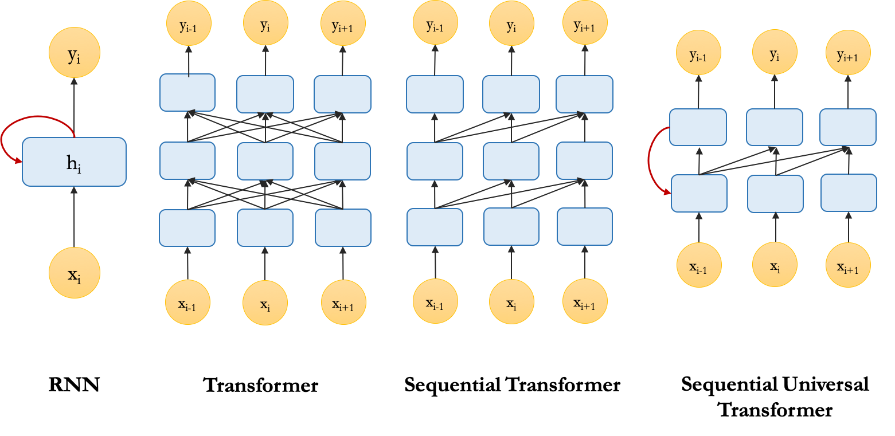
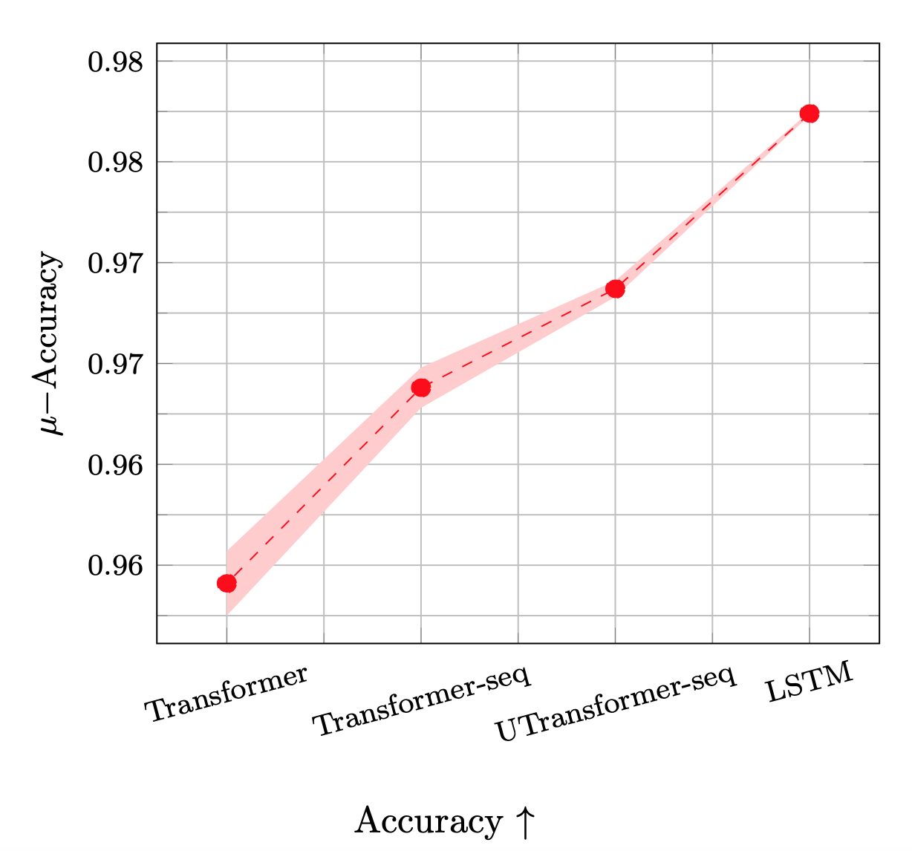

Transformers have become the most promising models in machine learning, particularly for solving natural language processing tasks. The fact that Transformer based models do so good raises the question of whether the more traditional neural network architectures for processing sequences, recurrent neural networks (RNNs), are obsolete now?
While Transformers do extremely well on many tasks given enough training data and computation (Devlin et al., 2019; Keskar et al., 2019; Radford et al., 2019), several studies have shown that LSTMs, the most popular variants of RNNs, can perform better than Transformers on tasks requiring sensitivity to hierarchical (linguistic) structure, especially when the data is limited (Tran et al., 2018; Dehghani et al., 2019). Theoretically, both RNNs and Transformers can deal with finite hierarchical structures. But, they have different preference inductive biases and the superior performance of LSTMs over Transformers in these cases is attributed to their recurrent inductive bias. The recurrent inductive bias of LSTMs seems to have an important role in enabling them to model the hierarchical structure of the inputs. The question we try to answer in this post is that what is the recurrent inductive bias?
What is Inductive Bias?
Inductive bias is generally defined as any kind of bias in learning algorithms that does not come from the training data. Inductive biases of the learning algorithms determine their generalisation behaviour and the type of solutions they converge to. There are different sources for inductive biases in learning algorithms, for instance, the architectural choices, the objective function, the curriculum strategy, or the optimization regime.
Let’s assume, we are given a task and two models, A and B, with similar expressive power, i.e. the desired solution for the task is realizable for both models. Also assume that model B has a stronger inductive bias toward the solution compared to model A. While model A can eventually learn the solution if we provide it with enough data and computation, model B can achieve this goal with much less data and computation. Hence, designing learning algorithms with proper inductive biases is essential especially when data and compute is limited.
Moreover, in the absence of strong inductive biases, a model can be equally attracted to several local minima on the loss surface; and the converged solution can be arbitrarily affected by random variations, for instance, the initial state or the order of training examples (Sutskever et al., 2013; McCoy et al., 2020; Dodge et al., 2020).
What is Recurrent Inductive Bias?
The inductive bias of RNNs is often referred to as the recurrent inductive bias. Even though this term is used frequently in the literature, I have not been able to find a clear definition for it. Generally, the term refers to any bias that origins from the recurrent architecture. We can distinguish between three main sources of this bias in RNNs:
- The sequential processing of the input: There is an inherent notion of order in the architecture that forces the model to access next tokens in the input one by one.
- No direct access to the past tokens: The model has to compress all the information from past tokens in a hidden state/memory, which is accessible when processing the next token.
- Recursion: The model recursively applies the same function on the varying input at every time step.
In contrast to RNNs, Transformers, process the input in parallel. Although a weak notion of order is encoded by positional embeddings, no explicit assumption is made in the connectivity structure of the architecture. Moreover, they have a global receptive field and can access all tokens through self-attention. Finally, standard Transformers are not recursive, they apply the same set of weights on all input tokens, but they don’t do it recursively.
Recurrent Inductive Bias in Practice
I have done a small experiment to examine the effect of recurrent inductive bias of RNNs in practice. Let’s take a look into it!
The task of subject-verb agreement is proposed by (Linzen et al., 2016) as a proxy for assessing the ability of models to capture hierarchical structure in natural language. In this task, the goal is to predict number-agreement between subjects and verbs in English sentences. Succeeding at this task is a strong indicator that a model can learn syntactic structures. It is shown by (Tran et al., 2018) that the recurrent inductive bias of RNNs helps them to achieve better performance on this task compared to standard Transformers.
To empirically examine the benefits of each of the three sources of the recurrent inductive bias mentioned earlier, we can modify the standard Transformer to have an architecture with specifications that are similar to RNNs. Then we measure how the performance of the models change as we include more aspects of the recurrent inductive bias. These are the three different variants of Transformers we use:
- Transformer: Standard Transformer encoder with a class token (CLS) for classification (BERT style),
- Sequential Transformer: Transformer encoder with future masking where the classification is done using the representation of the last token\footnote{Note that future tokens are masked out by default when using a transformer in the decoder mode, e.g., in a language modelling setup.},
- Sequential Universal Transformer: Universal Transformer (Dehghani et al., 2019) encoder, where we have a recurrence in depth by sharing parameters among all the layers, also with future masking. % Among these variants of Transformer, Sequential Transformer implements sequential access to tokens, and Sequential Universal Transformer has both sequential access to tokens and a form of recursion. Here is a schematic view of the architecture of RNN and the variants of Transformer we discussed.

These models are trained to predict the number of the masked verb in a given sentence (binary classification objective). In the plot below, we can see the mean and standard deviation of the accuracy over multiple trials. As we can see, LSTM achieves the best performance and has the least variance. 
Interestingly, comparing all four models, we find that the performance steadily increases as more aspects of the recurrent inductive bias are included.
As another indicator of the quality of the solutions that different models converged to, we look into their confidence calibration[^af15b0ee].
[^af15b0ee]: Confidence calibration captures how well likelihood (confidence) of the prediction of the model predicts its accuracy. For a well-calibrated model, if we bin the confidence scores and compute the accuracy for each bin, the accuracies are perfectly correlated with the confidence values. The Expected Calibration Error (ECE) is computed as the distance between the calibration curve of the model and the perfect calibration curve.
In the figure below, we plot the Expected Calibration Error (ECE) of the models. In line with the trends in the performances of these models, the expected calibration error decreases as we move from standard Transformer toward LSTM.

Additionally, as shown in both above figures, we find a decreasing trend in the variance of the models, i.e., adding more inductive biases to the models decreases their variance. This is a piece of empirical evidence that supports the relation between variance of the solutions a model converges to and its inductive biases.
Read more about this in our paper:
@article{abnar2020transferring,
title={Transferring Inductive Biases through Knowledge Distillation},
author={Samira Abnar and Mostafa Dehghani and Willem Zuidema},
year={2020},
eprint={2006.00555},
archivePrefix={arXiv},
}